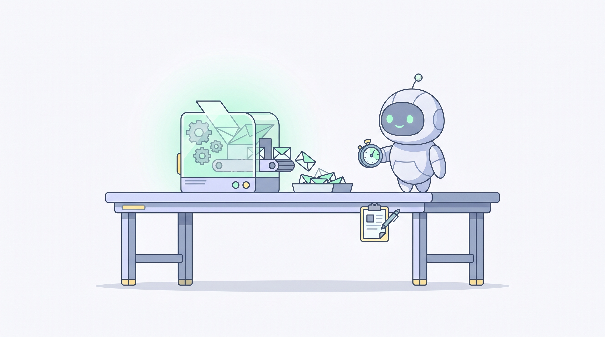
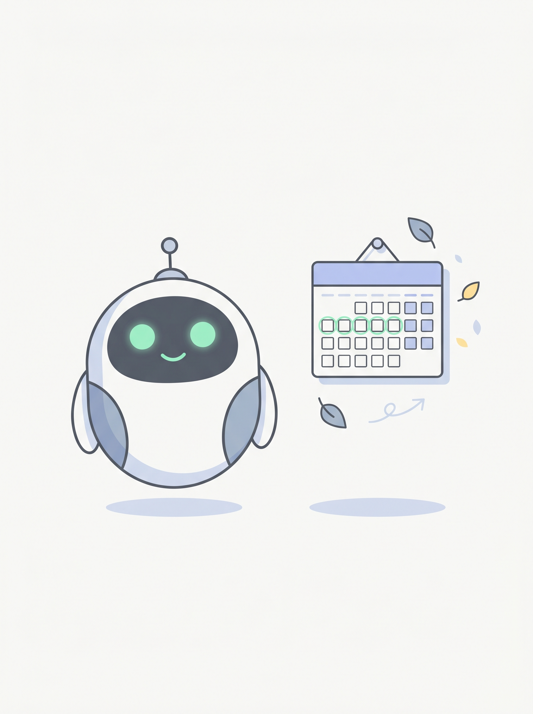
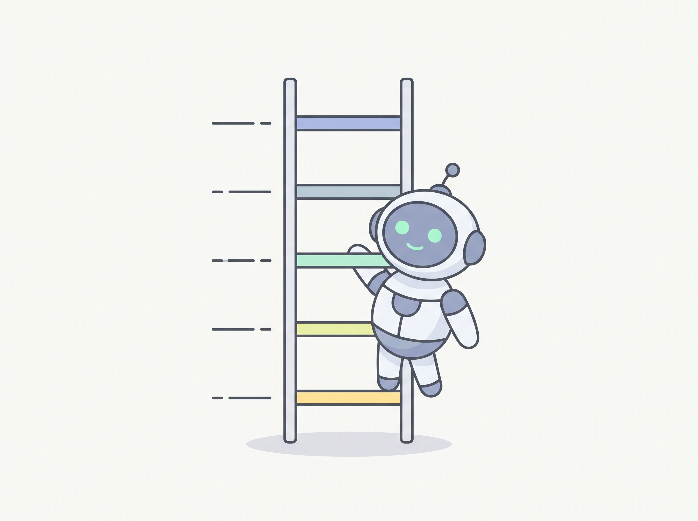
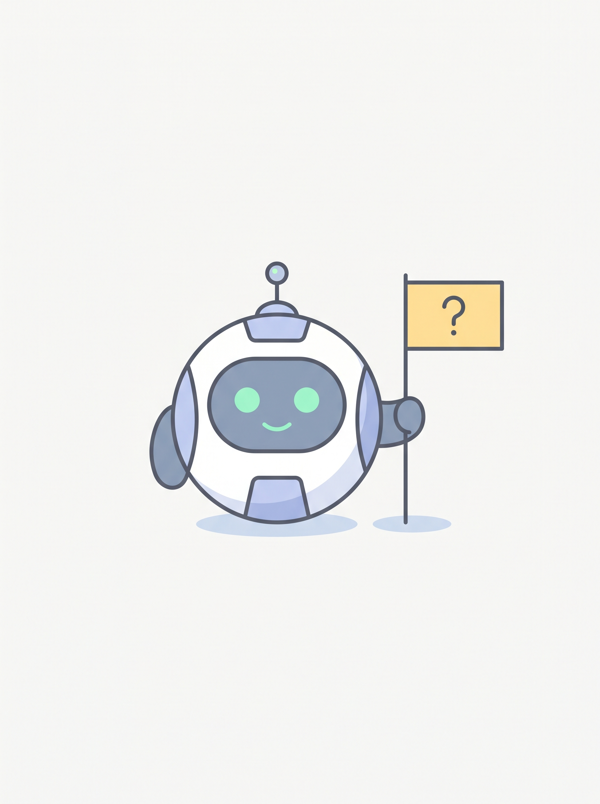
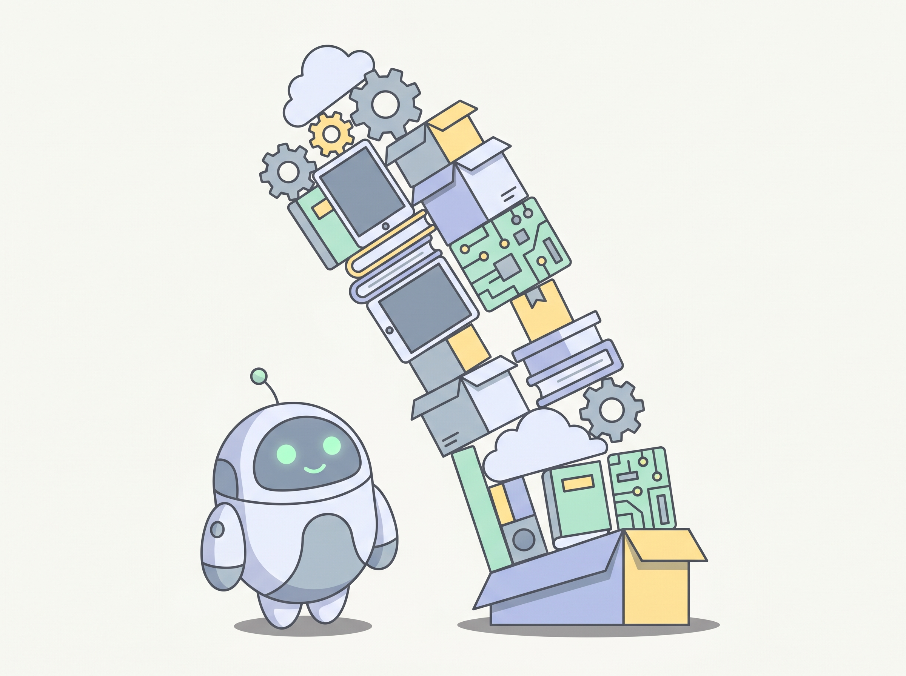
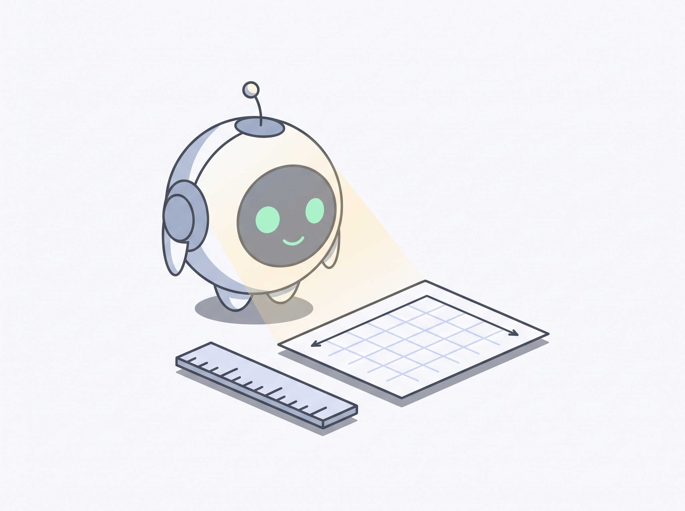
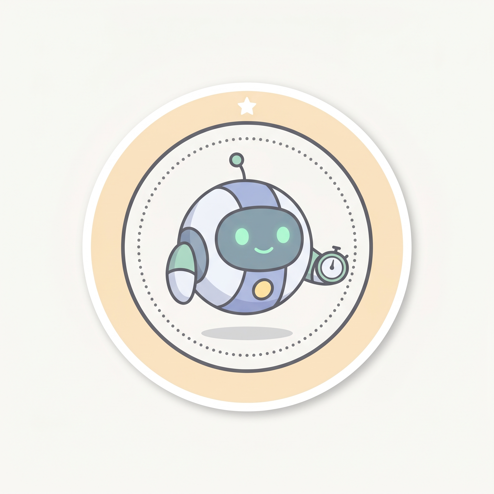

The operational reality. How an agent actually runs day-to-day, plus the four mistakes that account for most failed agent projects. Knowing these is worth more than another tutorial.


Most agents run on a clock. Once a day, twice a day, every Monday morning. Pick the lowest frequency that's still useful.
→ "Every weekday at 08:00" is a great first schedule.
Don't go from zero to autonomous. Five rungs: drafts a human reads → drafts a human glances at → sends easy ones, escalates hard → sends most, you sample → retired.
→ Spend the first month on rung 1. Earn the trust week by week.


Every good agent has a way to stop and ask a human when it's unsure. Silence is the worst possible answer.
→ The day your agent stops escalating is the day you should worry.
Most failed agent projects look the same up close. Know them up front.

One agent does one thing. The owner who tries to build a single intelligent assistant that does everything ships nothing. Pick a narrow, scheduled, boring task first.
The agent will run on a day when its inputs are missing or wrong. Without a guard it publishes garbage with full confidence. Always include "refuse to act if X is missing".

"It feels useful" is not a result. Decide on day one how you'll measure hours saved or money moved by week four. Write it down before you start.
For agent #1, the agent always drafts and a human always approves. The day you let it auto-send is the day it embarrasses you. Earn the trust over weeks, not hours.
If you only remember one thing from this station: write one more guard than you think you need. Future-you will write a thank-you note.
Be honest. For most owners it's pitfall 1 (too ambitious) or pitfall 3 (no measurement). Knowing your own tendency is half the protection.

Sixth sticker. Three studios left — these are optional, and they're where you actually build.